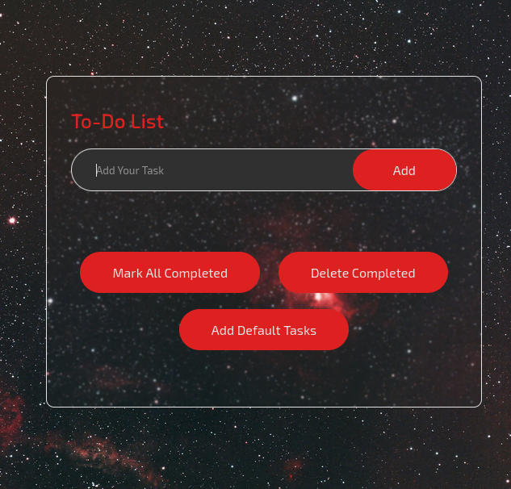
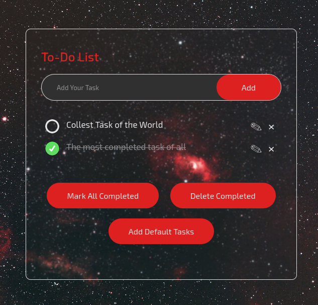
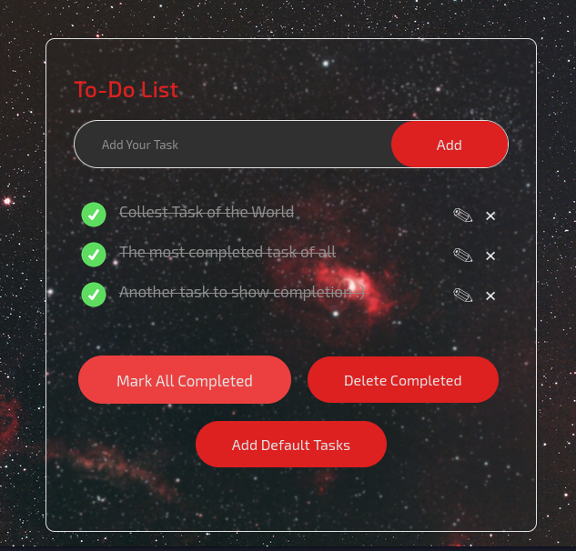
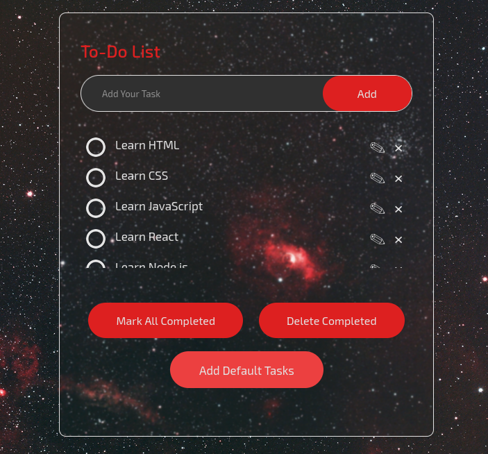

Meet the only To-do List you'll ever need
Join us in crafting the ultimate To-Do List experience!


Create your tasks quickly
Either pressing enter or clicking the "Add" button, create as many tasks as you like and edit their descriptions afterwards. Create the tasks while they're fresh, bother about them later.

Complete many tasks with one press of a button
Sometimes we complete tasks in bulk. Thes "complete all" and "delete all" buttons allows you to mark all tasks complete and then clean your list, to give space to your next missions.

Examples for the indecisive
If you are a indecisive person we got you covered! We separated 15 "mock" tasks so you can see how they look and plan your own tasks. We hold your hand so you can mindlessly complete the tasks your procrastination habits disturb!